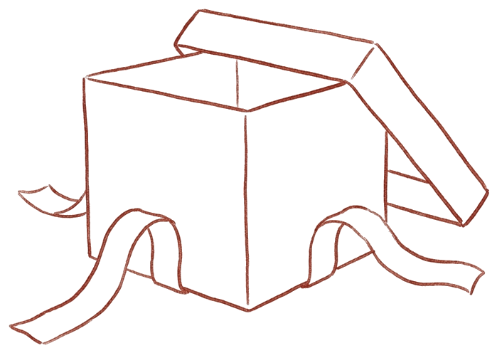
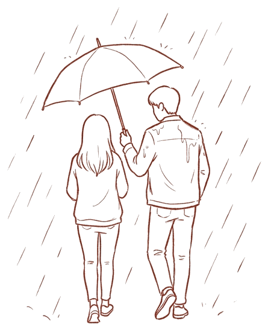

우리, 사랑을 말하다
2과
설렘이 식으면 사랑도 끝날까요

여는 이야기

사귄 지 일 년 반 된 커플이 주말 저녁 카페에 마주 앉아 있습니다. 처음 사귈 때는 약속 시간 몇 시간 전부터 옷을 고르고, 멀리서 걸어오는 모습만 보아도 심장이 뛰었습니다. 헤어져 돌아가는 길에도 아쉬워서 다시 전화를 걸곤 했습니다.
그런데 요즘은 카페에 마주 앉아서도 각자 휴대전화를 보는 시간이 늘었습니다. 주말 약속을 잡을 때도 예전 같은 두근거림이 없습니다. 한 사람이 화면에서 눈을 떼고 조심스럽게 말을 꺼냅니다. '우리 요즘 예전 같지 않지? 마음이 식은 걸까?' 불안한 눈빛으로 묻는 말에 상대방은 웃으며 넘깁니다. '무슨 소리야, 오래 만나서 편해진 거지.'
설렘은 선물이지만 오래 머물지는 않습니다
성경이 말하는 사랑은 깊고 진한 감정을 부정하지 않습니다. 설렘은 하나님께서 주신 선물입니다. 사랑에 빠졌을 때 우리는 온종일 상대를 생각하고, 함께 시간을 보내는 것만으로도 행복과 안정감을 느낍니다. 상대와 마음이 통하고 매력을 느끼는 일은 기분 좋은 일이며, 그 기쁨 자체를 일부러 깎아내릴 필요는 없습니다.

문제는 들뜬 감정이 영원할 것이라고 믿는 데 있습니다. 사랑에 빠진 사람은 지금의 황홀한 기분이 평생 갈 것이라고 여기고, 다른 커플들은 감정이 식어도 우리는 다를 것이라고 확신합니다. 그러나 들뜬 상태가 이어진다면 공부나 일에 마음을 쏟기 어려울 것입니다.1 하나님께서 사람을 지으실 때 연애 감정이 평생 똑같이 이어지지 않게 하신 데는 까닭이 있습니다. 시간이 흐르면 뜨거운 흥분은 차츰 따뜻한 신뢰로 바뀝니다.
그런데도 많은 사람은 배우자를 고를 때 로맨틱한 끌림을 가장 중요한 기준으로 삼습니다. 예수님께서는 "그런즉 너희는 먼저 그의 나라와 그의 의를 구하라"(마 6:33)라고 말씀하셨지만, 정작 결혼 상대를 고를 때만은 이 말씀을 제쳐 두고 짜릿한 감정을 따라야 한다고 여깁니다. 상대를 존경하고 사랑하면서도 가슴이 뛸 만큼 강렬한 끌림이 없다는 이유로 관계를 접기도 합니다. 반대로 심각한 문제가 분명히 보이는데도 감정이 뜨겁다는 이유만으로 서둘러 인생을 걸기도 합니다.
들뜬 감정이 가라앉고 현실로 돌아오면 그동안 보이지 않던 서로의 차이와 허물이 눈에 들어옵니다. 사람은 저마다 원하는 것이 다르고, 날 때부터 자기중심적이어서, 갈등이 생기는 것은 당연합니다. 사랑에 빠진 감정이 시든 것을 사랑이 끝난 것으로 여겨서는 안 됩니다. 참된 사랑은 오히려 여기에서 시작합니다. 들뜬 감정에 끌려다니던 때를 지나, 생각과 의지로 상대의 유익을 위해 친절과 관용을 택하는 것이 사랑입니다.
사랑에 빠진 감정이 시든 것을 사랑이 끝난 것으로 여겨서는 안 됩니다. 참된 사랑은 오히려 여기에서 시작합니다.
화잇은 『재림신도의 가정』(50쪽)에서 이렇게 썼습니다. "사랑은 우리가 예수님에게서 받는 귀한 선물이다. 순결하고 거룩한 애정은 감정이 아니고 원칙이다." 충동으로 생겼다가 시련 앞에서 쉽게 시들어 버리는 감정과 달리, 참된 사랑은 식물처럼 가꾸어야 자랍니다. 정다운 마음씨와 진실한 말이 사랑을 키웁니다.
Think 1. 들뜬 감정이 평생 이어지지 않는 것은 왜 자연스럽고 필요한 일일까요?
설렘은 눈을 가리기도 합니다
사랑에 빠진 감정은 오래가지 않을 뿐 아니라, 상대를 정확하게 보는 눈을 가리기도 합니다. 처음 사랑에 빠졌을 때 우리가 사랑하는 것은 실제 그 사람이 아니라 그 사람에 대한 내 생각일 때가 많습니다. 상대를 머릿속에서 완벽한 사람으로 꾸며 놓고, 누가 봐도 뻔한 약점은 대수롭지 않게 넘겨 버립니다.
게다가 사람은 누구나 부끄러운 허물은 감추고 좋은 모습만 보이려 합니다. 마음에 둔 사람 앞에서는 더 그렇습니다. 단점을 모르는 사랑은 그 사람이 아니라 내가 그린 그림에 매달리는 집착에 가깝습니다. 장점과 허물을 다 알고도 온 마음으로 사랑할 때, 허울을 벗은 사랑을 나눌 수 있습니다. 현실의 어려움은 생각하지 않고 완전한 상대만 꿈꾸던 사람은, 결혼한 뒤 서로의 연약함과 허물을 마주할 때 크게 실망하기 쉽습니다.
단점을 모르는 사랑은 그 사람이 아니라 내가 그린 그림에 매달리는 집착에 가깝습니다.
실비아라는 여성은 운동을 잘하고 시와 음악을 사랑하며 붉은 장미꽃을 안겨 줄 남자를 꿈꾸었습니다.2 그러나 정작 다가온 사람은 공학과 기술에만 관심 있는 건축 전공자였습니다. 처음에는 장미는커녕 사랑의 표시로 아무것도 선물하지 않고 무뚝뚝하게 다가왔습니다. 실비아는 자신이 꿈꾸던 사람과 너무 달라 헤어지려 했습니다.
반 년쯤 지나자 생각이 바뀌기 시작했습니다. 자기가 좋아하는 책을 여자 친구에게 보내는 사람이 장미꽃을 건네는 사람보다 더 진지하고 속 깊은 남자일지 모른다고 여기게 된 것입니다. 어느 날은 철교의 철선이, 또 어떤 날은 하늘로 뻗은 고층 건물이 아름답게 보였습니다. 그가 좋아하던 것들이 그녀 눈에도 보이기 시작한 것입니다. 그녀는 풍경을 남자 친구에게 보여 주고 싶었습니다. 머릿속의 꿈과 이해받기만 바라는 태도를 내려놓았을 때, 실제 사람을 이해하고 사랑하는 첫걸음을 뗀 것입니다.
흔히 '금사빠'(금방 사랑에 빠지는 사람)라고 부르는 이들은 친해지는 과정을 건너뛰고, 상대가 곧바로 호감과 인정을 보여 주기를 기대하기 쉽습니다. 그러나 사람이 서로를 알아 가는 데는 시간이 필요합니다. 첫눈에 반했더라도 관계가 여물어 갈 틈을 주어야 합니다.
한편 '확 끌리는 사람이 아니면 마음이 열리지 않는다'거나 '하나님께서 준비하신 사람이라면 처음부터 느낌이 오지 않을까?' 하고 묻는 사람도 있습니다. 끌림이 나쁜 것은 아닙니다. 함께 시간을 보낸다고 꼭 연애 감정이 생기는 것도 아니고, 마음을 억지로 열어야 할 의무도 없습니다. 다만 처음의 강렬한 끌림만으로 상대를 판단하지는 말아야 합니다. 하나님의 인도에 대한 물음은 9과에서 더 다룹니다.
연애 감정에 사로잡히면 나이와 상관없이 판단력이 흐려져, 자기 남자 친구에게는 단점이 하나도 없다고 믿기도 합니다. 그러나 성경은 "우리가 다 실수가 많으니"(약 3:2)라고 말합니다. 상대의 실수와 약점을 말할 수 있을 만큼 알기 전에는 서두르지 말고, 가족과 친구, 신앙 공동체의 도움을 받아 관계를 차분히 돌아보아야 합니다.
Think 2. 내가 그려 놓은 기대나 환상 때문에 지금 곁에 있는 사람(연인·친구·가족)의 실제 모습을 있는 그대로 보지 못했던 적이 있습니까?
성경은 사랑을 받는 만큼이 아니라 주는 만큼으로 잽니다
사랑을 특별한 감정으로만 보면, 서로 사랑하면 됐지 결혼 서약 같은 약속이 왜 필요하냐고 물을지도 모릅니다. 상대에게서 애정을 얼마나 간절히 바라느냐로 사랑을 재는 것입니다. 성경은 내가 얼마나 받고 싶어 하느냐보다, 상대를 위해 내 시간과 감정과 자유를 얼마나 기꺼이 내어 주느냐로 사랑을 잽니다.
성경은 내가 얼마나 받고 싶어 하느냐보다, 상대를 위해 내 시간과 감정과 자유를 얼마나 기꺼이 내어 주느냐로 사랑을 잽니다.
『기본교리』는 참되고 지속적인 부부 사랑의 기초를 신약이 말하는 아가페 사랑, 곧 자기를 앞세우지 않고 오직 상대를 위하는 사랑으로 설명합니다. 결혼 생활에서 다른 사랑이 다 흔들릴 때에도 관계를 붙들어 주는 것은, 의지로 택하는 이 아가페 사랑입니다.

고린도전서 13장도 사랑을 설렘의 크기가 아니라 구체적인 행동과 태도로 묘사합니다. "사랑은 오래 참고 사랑은 온유하며 시기하지 아니하며 사랑은 자랑하지 아니하며 교만하지 아니하며 무례히 행하지 아니하며 자기의 유익을 구하지 아니하며 성내지 아니하며 악한 것을 생각하지 아니하며 불의를 기뻐하지 아니하며 진리와 함께 기뻐하고 모든 것을 참으며 모든 것을 믿으며 모든 것을 바라며 모든 것을 견디느니라"(고전 13:4–7).
이 사랑의 가장 완전한 본보기는 예수 그리스도의 십자가입니다. "그가 우리를 위하여 목숨을 버리셨으니 우리가 이로써 사랑을 알고 우리도 형제들을 위하여 목숨을 버리는 것이 마땅하니라"(요일 3:16). 예수님께서는 우리의 죄가 그분을 죽음으로 몰아갔는데도 끝까지 우리를 사랑하셔서 자신을 내어 주셨습니다.
요한은 이어서, 궁핍한 형제를 보고도 도울 마음을 닫는 사람 안에는 하나님의 사랑이 거할 수 없다고 말하며 이렇게 권합니다. "자녀들아 우리가 말과 혀로만 사랑하지 말고 행함과 진실함으로 하자"(요일 3:18).
행동보다 애틋한 감정에 무게를 두면, 관계를 지키고 키우는 힘이 약해집니다. 감정이 먼저 뜨거워져야 사랑할 수 있다고 여기면 지혜롭게 사랑하기 어렵습니다. 강렬한 느낌을 주는 행동만 진짜 사랑으로 여기면 좋은 친구나 좋은 가족, 좋은 배우자가 되기 어렵습니다.
아이가 특별히 예쁜 짓을 하지 않은 날에도 휴가를 내어 함께 놀아 주는 부모를 생각해 보십시오. 애정이 가득하지 않을 때에도 상대를 위해 움직이는 것이 더 깊은 사랑일 수 있습니다. 보기만 해도 기분 좋은 사람에게 잘해 주는 것은 어쩌면 내 만족을 위한 일일 수도 있기 때문입니다.
Think 3. 최근 가족이나 친구, 교우에게 '기분이 내켜서'가 아니라 그 사람의 유익을 위해 시간이나 수고를 내어 준 일은 무엇입니까?
사랑은 느낌으로 시작할 수 있지만,행동으로 자랍니다.
설렘이 식을 때
어떤 관계든 사랑의 감정이 마르기 시작하는 때가 옵니다. 결혼한 부부도 마찬가지입니다. 생활의 어려움에 부딪혀 로맨스가 사라지고, 결혼 전에는 몰랐던 서로의 성품이 드러나는 때입니다. 화잇은 이때를 "가장 위험한 시기"라고 했습니다. 『재림신도의 가정』(105쪽)에서 이렇게 썼습니다. "모든 사람들은 단점보다도 장점을 발견하도록 노력할 것이다. 상대방이 우리에게 무엇을 드러낼지를 결정하는 것은 흔히는 우리 자신의 태도 즉 우리를 두른 분위기이다." 상대의 단점보다 장점을 찾으려 애쓰라는 말입니다. 상대가 어떤 모습을 보이느냐는 내가 어떤 태도로 대하느냐에 달려 있을 때가 많습니다.
화잇은 같은 글(106쪽)에서 서로 사랑하고 관용하라고 권하면서, 사랑이 깊어지는 길을 이렇게 밝힙니다. "그리스도께 대한 그대의 사랑이 증대될 때에 그대들 피차간의 사랑도 더욱 깊고 더욱 강하게 자라날 것이다."
성경이 우리에게는 이웃을, 남편들에게는 아내를 사랑하라고 명령하는 것은 감정을 억지로 만들어 내라는 뜻이 아닙니다. 감정은 수시로 오르내려 마음대로 할 수 없기도 합니다. 그러나 행동은 얼마든지 선택하고 약속할 수 있습니다. 아침에 일어나기 싫어도 일어날 만한 가치가 있어서 일어나듯, 내게 자연스럽지 않은 일이라도 상대를 위해 하는 것이 사랑입니다.
더 나아가 호감이 일지 않을 때라도 먼저 사랑하듯 행동하면 마음이 따라오기도 합니다. 한 목회자 부부는 성격 문제로 주변 사람들이 꺼리던 교회의 한 부부를 몇 달 동안 꾸준히 찾아가 이야기를 들어 주고 도왔습니다.3 처음에는 마음이 끌리지 않았습니다. 그런데 사랑으로 할 수 있는 일을 다하며 시간을 쏟다 보니, 어느새 그 부부가 좋아져 휴가 때 집으로 초대하고 싶어졌습니다. 감정이 행동을 따라잡은 것입니다.
낭만과 사랑은 다릅니다. 낭만은 하늘로 날아오르지만 사랑은 땅에 발을 딛습니다. 낭만은 완벽을 바라지만 사랑은 허물을 용서합니다. 낭만은 곧 사라지지만 사랑은 오래 갑니다.4
낭만은 하늘로 날아오르지만 사랑은 땅에 발을 딛습니다.
아프리카에서 선교사로 일하던 한 여성은 다른 대륙에 있는 목사와 약혼했습니다. 그런데 결혼하러 가는 비행기 안에서, 기대했던 들뜬 기분도, 자신감도 찾아오지 않아 잠을 이루지 못했습니다.5 그때 한 결혼 상담가의 말이 떠올랐습니다. 처음에는 사랑할 사람을 선택하고, 그다음부터는 선택한 사람을 사랑한다는 말이었습니다. 그녀는 아직 온전히 느낄 수는 없었지만, 자신이 옳은 길로 가고 있음을 확신했습니다.
다만 이것은 약혼한 한 사람의 고백입니다. 이미 결혼한 부부는 서로 한 약속 위에서 의지로 사랑하는 법을 배워 갑니다. 하지만 약혼을 포함한 결혼 전의 교제에서는 두 사람이 정말 좋은 짝인지 정직하게 돌아볼 자유가 있습니다. 설렘이 식었다는 이유만으로 좋은 관계를 쉽게 버릴 필요는 없습니다. 관계를 위해 애쓰는 까닭은 감정이 뜨거워서가 아니라 상대가 좋은 짝이기 때문이어야 합니다. 그러니 상대의 성품에 심각한 문제가 드러났는데도 결혼 전의 교제를 무조건 이어 가서는 안 됩니다.
특히 폭력이나 위협, 통제, 성적 강요가 있는 관계라면 상황이 다릅니다. 그때는 참고 견딜 것이 아니라 도움을 구해야 합니다. 설렘이 식었다는 사실과 이 사람과 함께 갈 수 없다는 판단은 서로 다른 문제입니다.
정리
사랑에 빠질 때 찾아오는 설렘은 하나님께서 주신 선물입니다. 그러나 평생 똑같은 강도로 이어지지 않고 때로는 상대의 실제 모습을 가리기도 합니다. 성경은 사랑을 두근거림의 크기가 아니라 상대를 위해 기꺼이 행하는 헌신으로 설명합니다. 결혼 전의 교제에서는 설렘이 걷힌 자리에 드러난 성품을 정직하게 살펴야 합니다. 그리고 모든 소중한 관계에서 감정이 메마를 때에도 친절을 택하며 더 깊은 사랑으로 자라 갑니다. 사랑은 느낌으로 시작할 수 있지만, 행동으로 자랍니다. 설렘은 좋은 선물이지만 오래 머물지 않습니다.
Homework
적은 답을 모임에서 꼭 나누지 않아도 됩니다.
Q1. 흔히 말하는 '사랑에 빠진 설렘'과 성경이 말하는 '사랑'은 어떻게 다릅니까? 이 과에서 배운 내용으로 두세 문장을 적어 보십시오.
Q2. 내 주변(가족·친구·교회 포함)에서 설렘이나 기분에 기대지 않고 사랑을 행동으로 보여 준 사람은 누구입니까? 그 사람이 한 구체적인 행동 하나를 적어 보십시오.
이번 주 묵상
요한일서 3:16–18
16그가 우리를 위하여 목숨을 버리셨으니 우리가 이로써 사랑을 알고 우리도 형제들을 위하여 목숨을 버리는 것이 마땅하니라
17누가 이 세상의 재물을 가지고 형제의 궁핍함을 보고도 도와 줄 마음을 닫으면 하나님의 사랑이 어찌 그 속에 거하겠느냐
18자녀들아 우리가 말과 혀로만 사랑하지 말고 행함과 진실함으로 하자
우리의 고백
예수님께서 우리를 위하여 목숨을 버리셨기에 우리는 사랑이 무엇인지 압니다. 그 사랑은 말과 혀에 머물지 않고 행함과 진실함으로 드러납니다.
나의 기도
월요일·수요일·금요일, 한 주에 세 번 읽고 읽을 때마다 기도문 한두 문장을 단톡방에 올립니다. 한 번에 1~2분이면 됩니다.
이 과에서 참고한 책
켈러 『팀 켈러, 결혼을 말하다』(두란노) 100‑102, 123‑125, 129‑138쪽
채프먼 『5가지 사랑의 언어』(생명의말씀사) 36‑42, 171‑172쪽
토마스 『연애학교』(CUP) 47‑50, 52‑54, 57, 59, 61‑62, 65, 71쪽
가정 『재림신도의 가정』(시조사) 50, 105‑106쪽
워크북 『연애학교 결혼예비학교 워크북』(세움북스) 48쪽
편지 『젊은 연인들에게 보내는 편지』(전충권 편역) 42쪽
트로비쉬 『사랑은 배워야 할 감정입니다』(IVP) 15‑19, 65‑71쪽
윤홍균 『사랑 수업』(심플라이프) 264‑266쪽
기본교리 『제칠일안식일예수재림교 기본교리』(시조사) 410‑411쪽
성경은 개역개정.
출처
1들뜬 상태(채프먼 38‑39쪽)
2실비아(트로비쉬 15‑19쪽)
3목회자 부부(켈러 134‑136쪽)
4낭만과 사랑(마조리 홈즈, 트로비쉬 65‑66쪽)
5선교사(잉그릿 트로비쉬, 트로비쉬 69‑71쪽)